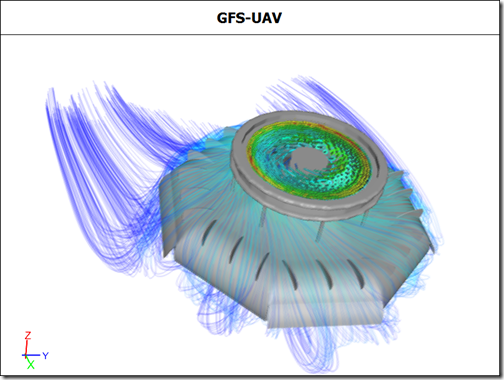

August 2011
As we enter the testing phase for the next release of Caedium (v3), this month we can share the new kind of simulation process that will be possible. Also you can catch up with a new RANS Flow example from a customer and a steady stream of new blog posts.
UAV Caedium CFD Simulation: Geometry from Google SketchUp
New Caedium Simulation Process
The new features in the next release of Caedium provide an alternate simulation preparation process. As an example, consider the process to create the simulation shown above:
- Extract the faceted geometry from Google SketchUp by exporting the 3D model using the COLLADA (.dae) option.
- Import the COLLADA model into Caedium, where feature edges are automatically captured according to a user preference.
- Add additional geometry such as the outer boundary volume and missing components using standard Caedium geometry tools.
- Use the new topology-based geometry options in Caedium to connect edges, stitch missing faces from edges, stitch volumes from connected faces, and subtract the model volume from the outer boundary volume.
- Set up the simulation physics, run the simulation, and visualize results as normal.
The option to create mixed geometry models, combining faceted and analytic (e.g., NURBS) geometry, will further extend the range of models that you can simulate in Caedium.
Aerodynamic Study of a Kyosho Mini-Z RC Model Racecar
Kyosho Mini-Z RC model racecars are 1/27 scale and race at speeds up to 10 m/s. Fernando Freitas races them as a hobby and was wondering about the effect of aerodynamics on his car's performance. Fernando was aware of Computational Fluid Dynamics (CFD) and thought it might help him satisfy his curiosity. At the same time Fernando came across Caedium Professional and, with a free 30-day trial, set to work. Fernando remarked "I found it [Caedium] to be extremely useful and easy to use." Read more >>
Blog
Below are teasers for my latest blog posts.
Poor Assessment of CFD for Rooftop Solar Arrays
In the press release announcing the report "Rooftop Solar Arrays and Wind Loading: A Primer on Using Wind Tunnel Testing as a Basis for Code Compliant Design per ASCE 7 (pdf)," there is the phrase "It also addresses the applicability of Computational Fluid Dynamics (CFD), which is sometimes proposed as an alternative to testing." With eager anticipation I read the report and found a quite damning assessment of CFD. Read more >>
Oceanic Domination
Not content with air domination through Virgin Airlines and Virgin America, and space domination through Virgin Galactic, Richard Branson has now set his sights on ocean domination with Virgin Oceanic. Read more >>
LinkedIn Group Discussions Linked to CFD Market Reports
A recent report "Global Computational Fluid Dynamics Market 2010-2014" caught my attention. This report and a number of similar CFD market reports from Infiniti Research on their TechNavio website bare an uncanny resemblance (based on their titles and summaries) to a series of questions and discussion in the LinkedIn group Computational Fluid Dynamics. Read more >>
Nasal CFD
The range of applications that can benefit from Computational Fluid Dynamics (CFD) analysis is quite literally breath taking. Take for instance a recent study that used CFD to analyze re-constructive surgery of a virtual nose, which could lead to improved nasal surgery. Read more >>
To Drone or Not
Unmanned aerial vehicles are all the rage at the moment and for obvious reasons - they don't risk humans in hostile environments and they don't get tired or need bathroom breaks. So it's a little surprising to see Firebird, a prototype surveillance airplane from Northrop Grumman, that can operate as a pilotless drone or operate as a piloted airplane. Read more >>
Feedback
Questions? Ideas? Problems?